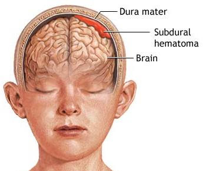

It is a treatment for chronic subdural hematoma, or persistent bleeding on the surface of the brain. This nonsurgical technique s the blood that is responsible for the bleeding under the dura mater on top of the brain and generally prevents the problem from coming back. Meningeal Artery embolization is now considered the standard of care as an effective option for management of chronic or acute on chronic subdural hematoma. Embolization offers a low complication and recurrence hemorrhage rates compared went compared open brain surgery.
It is a treatment for chronic subdural hematoma, or persistent bleeding on the surface of the brain. This nonsurgical technique s the blood that is responsible for the bleeding under the dura mater on top of the brain and generally prevents the problem from coming back. Meningeal Artery embolization is now considered the standard of care as an effective option for management of chronic or acute on chronic subdural hematoma. Embolization offers a low complication and recurrence hemorrhage rates compared went compared open brain surgery.
Although they may be due to trauma, they can also occur spontaneously or in association with the use of blood-thinners, abnormal blood vessels on top of the brain, and with advancing age. Typically, invasive neurosurgical been used to eliminate these hemorrhages. However, the blood collection can re-accumulate in over a quarter of neurosurgical patients. In patients who do not require in-hospital care, chronic subdural hematomas can be obliterated by injecting tiny particles (embolization) into the middle meningeal artery near the skull base under local anesthesia and moderate intravenous sedation. This outpatient procedure is usually quick and painless. Over time roughly two months there usually is complete or near complete resolution of the subdural hemorrhage.
Subdural Hematomas can be very slow growing, there may be no noticeable symptoms for more than 2 weeks to months after the bleeding starts. The symptoms and their severity will vary depending on your age, underlying medical conditions, how large the bleed is, and what type of subdural hematoma you have
SDHs are best diagnosed by computed tomography (CT) scan of the head. They appear as a dense, crescent-shaped mass over a portion of the brain’s surface.
Medical therapies for subdural hematoma generally have not proven to be very effective, and the surgical drainage through a burr hole or small craniotomy usually has a high bleeding and complication rate. Middle meningeal artery embolization considered the standard of care, is a minimally invasive procedure that works by eliminating the leaking blood vessels that are responsible for the subdural to that it can properly resolve without the need for open surgery. It is over 90 percent effective and can significantly reduce recurrence of the subdural.